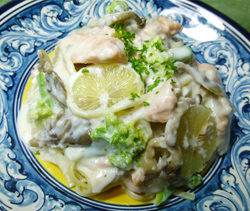

鮭とキノコのクリームパスタ
- 調理時間：45 分
- （一人当たり）
- カロリー：732kcal
- たんぱく質：23.2g
- 脂質：43.3g
- 炭水化物：60.4g
- 塩分：1.9g


＜2人分＞
- 生パスタ
（今回はリングイネを使用） - 240g
- 生鮭
- 1切
- 玉ねぎ
- 100g
- キノコ
（マイタケ、シメジなど） - 合わせて80g
- ブロッコリー
- 40g
- レモン
- 1/2個
- パセリ
- 少々
- 生クリーム
- 150g
- 塩
- 少々
- 黒コショウ
- 少々
- オリーブ油
- 大さじ1/2


- 鮭は骨を除き、一口大に切る。玉ねぎは薄切り、ブロッコリーは一口大に切る。
マイタケとシメジは石づきを取って手でほぐしておく。 - 塩（分量外）を入れた湯を沸かし、パスタを指定の時間で茹でる。
※慣れない方は先にソースを作ると安心です。 - フライパンにオリーブ油を熱し、鮭と玉ねぎを炒める。
マイタケ、シメジ、ブロッコリーも加えて炒める。 - 火が通ったら生クリームを入れ、沸騰したら火を止め、塩コショウで味をととのえる。
- 茹で上がったパスタをフライパンに入れ、火にかける。
茹で汁も大さじ１～２位入れる。 - 全体を絡ませ、皿に盛りつける。みじん切りにしたパセリとレモンの皮を剥いて輪切りにして添える。（おろした皮をちらしてもよい）
鮭とキノコのクリームパスタ
昭和３０年頃からパスタは本格的に大量生産されたとされ、一般の家庭にも手が届きやすくなりました。発売当初は日本人の反応も薄かったのですが、様々なメニュー開発やレストランの普及があり、さらに１９８０年代後半のバブルにかけて一気にトレンドに乗り、日本に浸透していきました。
今回使用したリングイネの語源は「舌」を表す「lingua」。断面が楕円形となっており、やや平打ちになっているのが特徴です。少し濃いめソースと相性がよいとされています。